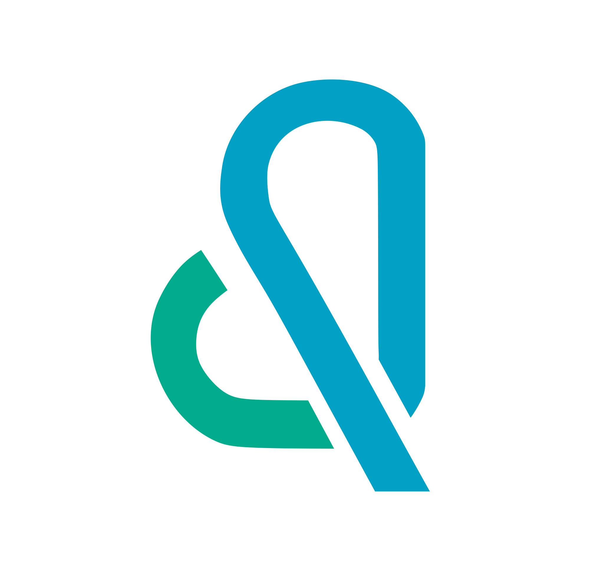
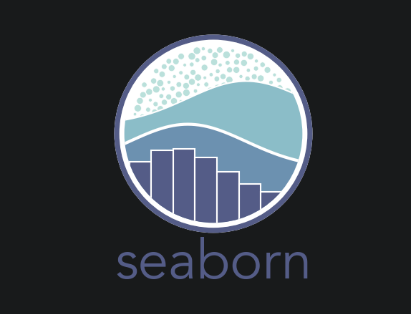
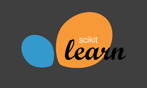
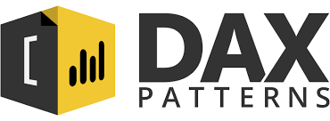
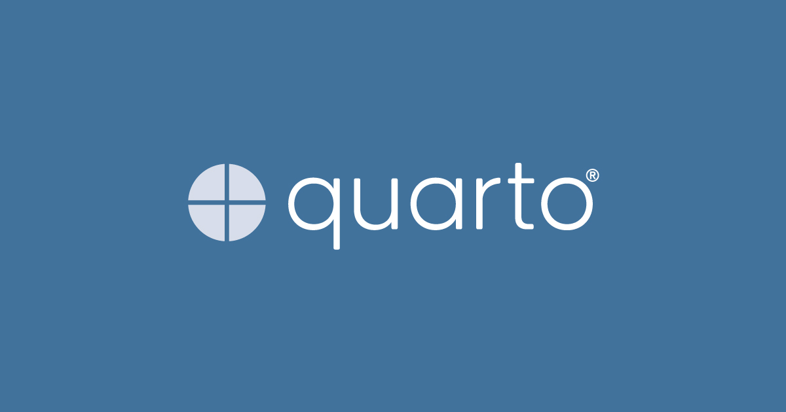

Hello! Thanks for visiting my website. I’m Vertikal Willis, 25 years old, and single. I’m from Medan and now living in Jakarta. I’ve got total 5 years of work experience (I’ve been working since my first semester of college), mostly as a buyer/procurement professional. I decided to switch careers to data science because I feel it suits me better. Processing complex data in creative ways to find strong insights and solutions gives me real joy. I think a data scientist is like an artist, be able to make something out of nothing by using data – it’s an art form!
To see my complete CV please email to vertikalwillis@gmail.com or contact me through LinkedIn!
Find me
Education
Dibimbing DS Bootcamp 
2023
- Most valuable person
- 2nd best of final project
- 3 x student of the month
Universitas Prima Indonesia
2016-2020
- GPA : 3.68 / 4
Certificates
Dibimbing DS
MVP
Report Card
Completion
HackerRank SQL
Advanced SQL queries
Skills
Tools









Prior work experiences
Palm oil industry company (JAKARTA)
2023
- Research potential vendors.
- Compare and evaluate offers from vendors.
- Negotiate contract of terms of agreement and pricing.
- Track orders and ensure timely delivery.
- Review quality of purchased products.
- Maintain updated records of purchased, products, delivery information and invoice.
- Prepare reports on purchases.
Coconut industry company (STABAT)
2022
- Learn the process of making desiccated coconut from raw coconut.
- Learn about the production machinery (technical and maintain).
- Ensure employee to work as Standard Operating Procedure (SOP).
- Do continuous improvement and brainstorm to increase machine efficiency and effectiveness.
Crusher trading company (MEDAN)
2020-2022
- Research potential vendors.
- Compare and evaluate offers from vendors.
- Negotiate contract of terms of agreement and pricing.
- Track orders and ensure timely delivery.
- Review quality of purchased products.
- Enter order details (e.g. Vendor, prices) into internal database.
- Maintain updated records of purchased, products, delivery information and invoice.
- Prepare reports on purchases.
- Monitor stock levels and place orders as needed.
- Coordinate with warehouse staff to ensure proper storage.
- Coordinate with warehouse about delivery goods to customers.
- Prepare and check paper work for logistic/shipment.
Transportation company (MEDAN)
2018-2020
- Monitor and follow up on breakdown vehicles to user (branch workshop supervisor).
- Analyze mechanic’s daily job by report that sent by user every day.
- Analyze and approve vehicle’s spare parts request.
- Analyze and approve vehicle’s repair request.
- Coordinate and follow up with the purchasing department about outstanding spare parts purchase requests.
- Coordinate and negotiate with external workshops for heavy repair work that can’t be done in the internal workshop.
- Analyze vehicles for an unreasonable breakdown.
- Analyze and evaluate the mechanic’s monthly performance based on the user’s and the mechanic’s daily reports.
- Prepare a daily, weekly, and monthly report.
- Helped supervisor make annual budgets.
Transportation company (MEDAN)
2017-2018
- Research potential vendors.
- Compare and evaluate offers from vendors.
- Negotiate contract of terms of agreement and pricing.
- Track orders and ensure timely delivery.
- Review quality of purchased products.
- Enter order details (e.g. Vendor, prices) into internal database.
- Maintain updated records of purchased, products, delivery information and invoice.
- Prepare reports on purchases.
- Monitor stock levels and place orders as needed.
- Coordinate with warehouse staff to ensure proper storage.